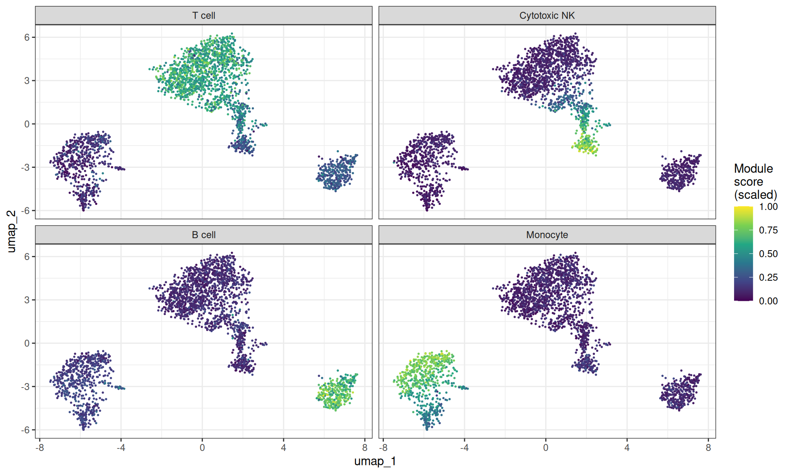
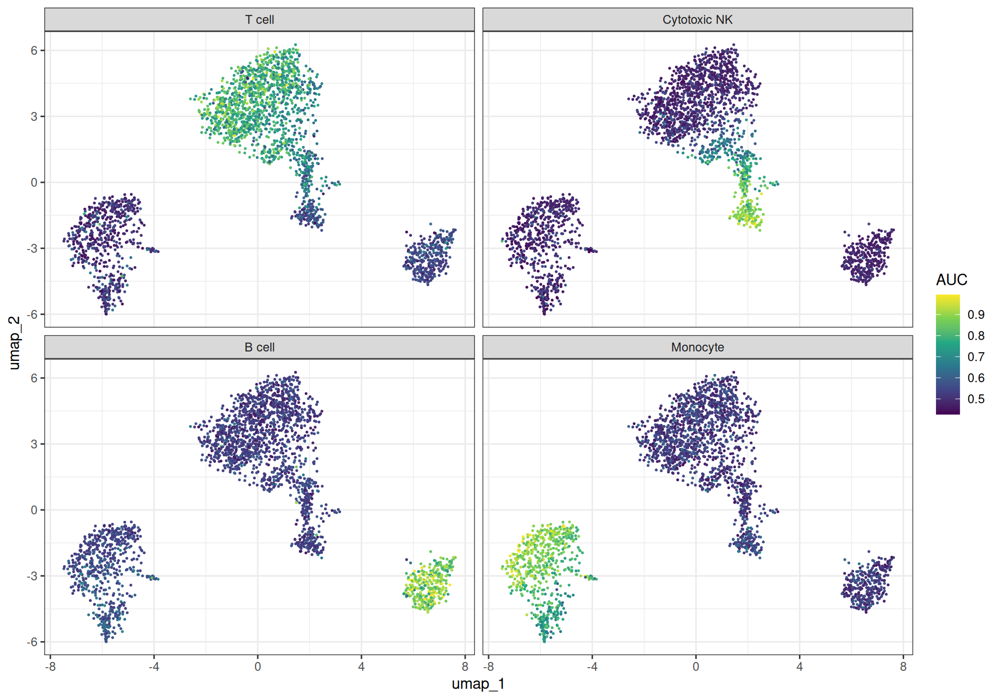
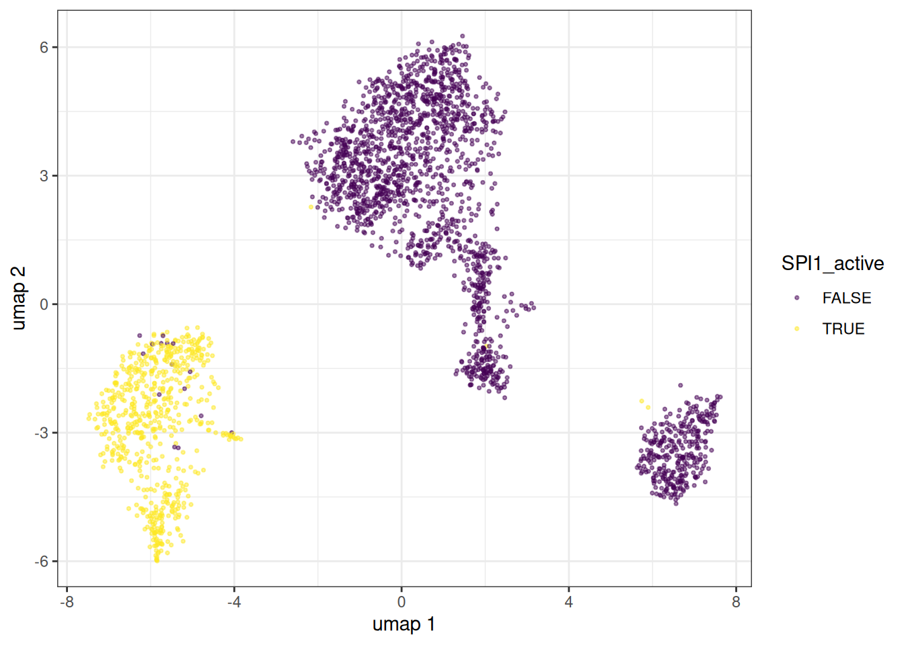
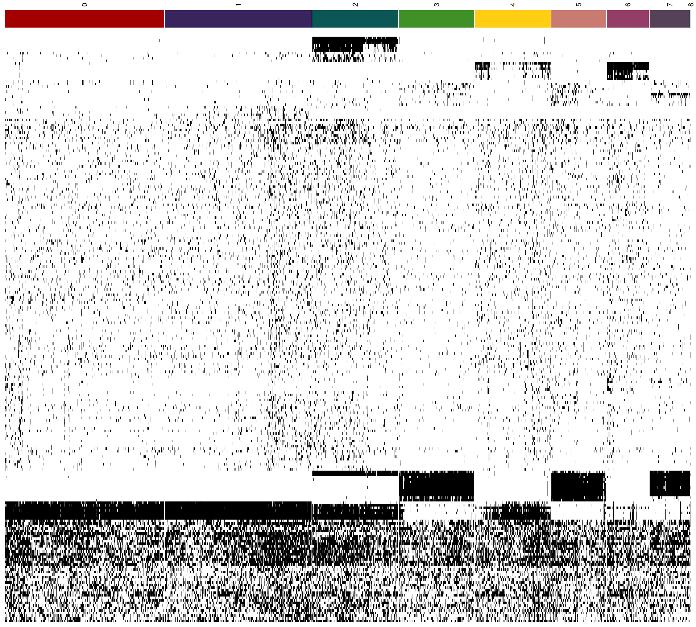
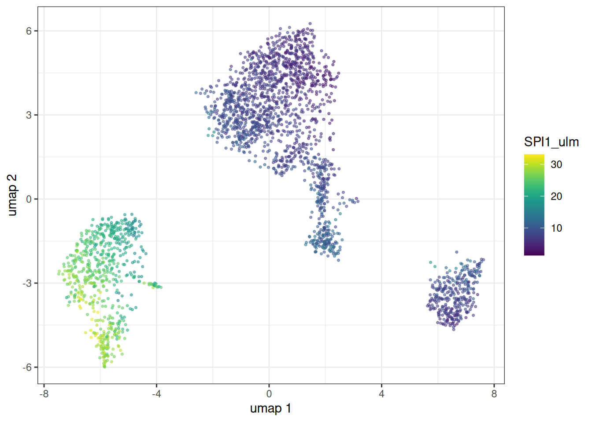
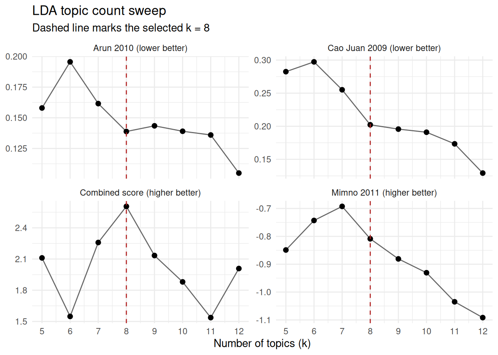
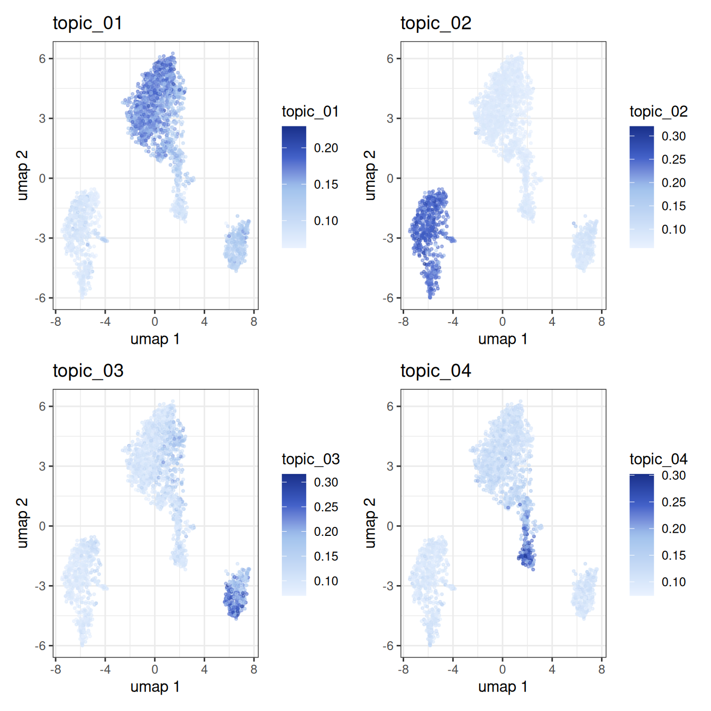
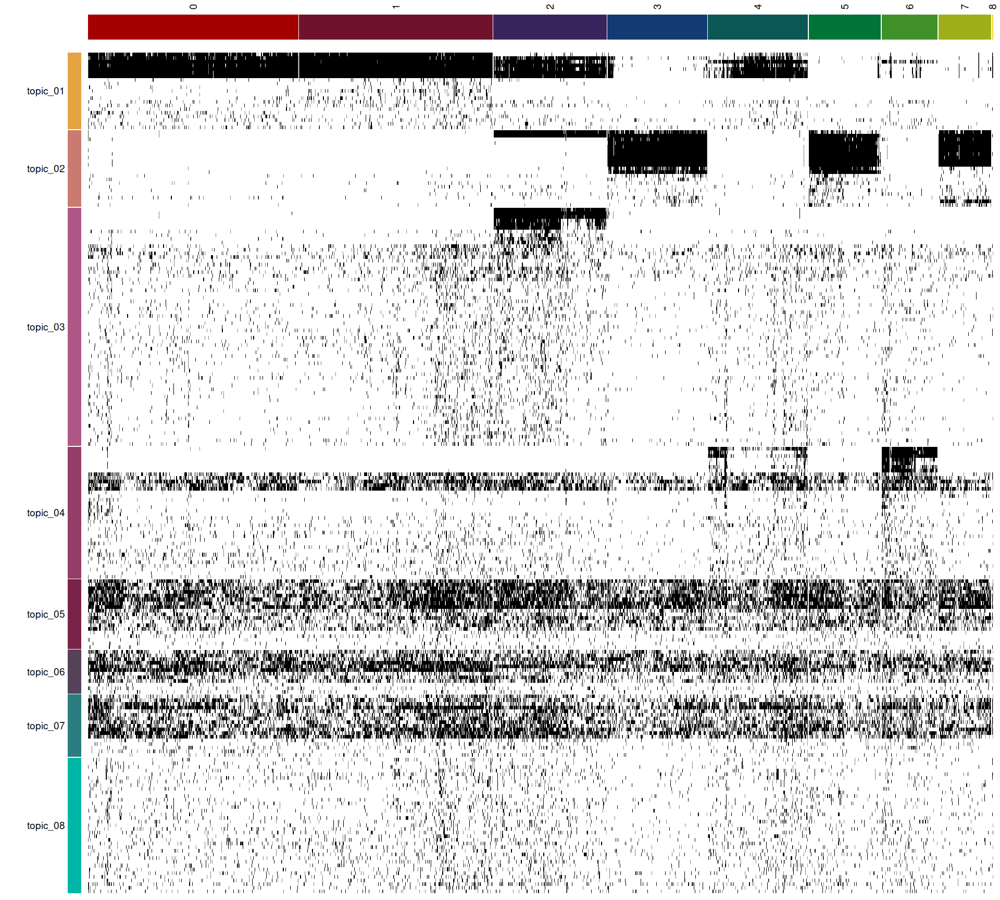

library(bixverse)
library(bixverse.plots)
library(ggplot2)
library(data.table)
#>
#> Attaching package: 'data.table'
#> The following object is masked from 'package:base':
#>
#> %notin%
library(magrittr)Gene set analysis and GRN inference on PBMCs
2026-10-27
Intro
This vignette demonstrates the gene set scoring, spatial autocorrelation, and gene regulatory network (GRN) inference methods available in bixverse. It picks up where the PBMC vignette left off: QC, normalisation, PCA, nearest neighbours, clustering and UMAP are all assumed to be done already. If you have not read the design choices and the introductory vignette, please do so first.
The methods fall into four broad categories:
- The first, module scores, AUCell, and VISION, takes pre-defined gene sets and scores them per cell. ULM and MLM do the same for signed networks and show up after SCENIC, scoring its TF-to-gene links.
- The second, Hotspot and SCENIC, discovers gene programmes and regulatory relationships from the data itself.
- The third, NMF, also discovers gene programmes and regulatory relationships via matrix factorisation which is different from SCENIC and Hotspot.
- The fourth, LDA, is a topic model over a binary matrix. It picks up where SCENIC leaves off: binarise the regulon activity, then sort the TFs into topics.
We use the PBMC3k dataset throughout. At 2,700 cells this is likely too small for the GRN methods to produce biologically meaningful results, but it is large enough to show the API and the workflow end to end. On real datasets with tens of thousands of cells the same code applies unchanged. Also, as the
Note
The vignette was built on a GitHub runner which is a 2-core machine with ~8 GB of memory. That this works is incredible enough, but take this into account when looking at this vignette.
Rebuilding the processed object
We reconstruct the processed SingleCells object from the PBMC vignette. The chunk is hidden for brevity: it downloads the data, runs QC, HVG selection, PCA, neighbour computation, Leiden clustering and UMAP.
Rebuild the PBMC3k object (click to expand)
pbmc3k_path <- download_pbmc3k()
tempdir_pbmc <- tempdir()
sc_object <- SingleCells(dir_data = tempdir_pbmc)
mtx_io_params <- get_cell_ranger_params(pbmc3k_path)
sc_object <- load_mtx(
object = sc_object,
sc_mtx_io_param = mtx_io_params,
mtx_streaming = FALSE,
.verbose = FALSE
)
setnames_sc(sc_object, table = "var", old = "column1", new = "gene_symbol")
var <- get_sc_var(sc_object)
ensembl_to_symbol <- setNames(var$gene_symbol, var$gene_id)
symbol_to_ensembl <- setNames(var$gene_id, var$gene_symbol)
# gene set proportions for QC
gs_of_interest <- list(
MT = var[grepl("^MT-", gene_symbol), gene_id],
Ribo = var[grepl("^RPS|^RPL", gene_symbol), gene_id]
)
sc_object <- gene_set_proportions_sc(
sc_object,
gs_of_interest,
streaming = FALSE,
.verbose = FALSE
)
# MAD QC
qc_df <- sc_object[[c("cell_id", "lib_size", "nnz", "MT")]]
metrics <- list(
log10_lib_size = log10(qc_df$lib_size),
log10_nnz = log10(qc_df$nnz),
MT = qc_df$MT
)
directions <- c(
log10_lib_size = "twosided",
log10_nnz = "twosided",
MT = "above"
)
qc <- run_cell_qc(
metrics = metrics,
cells_to_keep = get_cells_to_keep(sc_object),
directions = directions,
threshold = 3
)
sc_object[["outlier"]] <- qc$combined
cells_to_keep <- qc_df[!qc$combined, cell_id]
sc_object <- set_cells_to_keep(sc_object, cells_to_keep)
# HVG, PCA, neighbours, clustering, UMAP
sc_object <- find_hvg_sc(sc_object, hvg_no = 2000L, .verbose = FALSE)
sc_object <- calculate_pca_sc(sc_object, no_pcs = 30L, sparse_svd = TRUE)
#> Using sparse SVD solving on scaled data on 2000 HVG.
sc_object <- find_neighbours_sc(
sc_object,
neighbours_params = params_sc_neighbours(
knn = list(knn_method = "exhaustive")
)
)
#>
#> Generating the snn graph.
sc_object <- find_clusters_sc(sc_object, res = 1.5, name = "leiden_clusters")
sc_object <- umap_sc(sc_object, knn_method = "annoy")
#> Running UMAP.
#> Using n_epochs = 500 (dataset <10k samples or adam_parallel optimiser)
#> Using provided kNN graph.
# UMAP coordinates for reuse
umap_dt <- extract_embedding_data(sc_object, embedding = "umap")
setnames(
umap_dt,
old = c("dim_1", "dim_2"),
new = c("umap_1", "umap_2"),
skip_absent = TRUE
)Gene set scoring
Module scores
The simplest approach to gene set activity is the module score from Tirosh et al. (2016): for each cell, compute the mean expression of the gene set and subtract the mean expression of a size-matched control set drawn from the same expression bins. We will just use some lineage-specific genes to have pretty visualisations.
lineage_sets <- list(
`T cell` = symbol_to_ensembl[c(
"CD3D",
"CD3E",
"CD3G",
"CD2",
"IL7R",
"CD7",
"LEF1",
"TCF7",
"LTB",
"TRAC"
)],
`Cytotoxic NK` = symbol_to_ensembl[c(
"NKG7",
"GNLY",
"GZMA",
"GZMB",
"GZMH",
"PRF1",
"CST7",
"KLRD1",
"KLRB1",
"FGFBP2"
)],
`B cell` = symbol_to_ensembl[c(
"CD79A",
"CD79B",
"MS4A1",
"BANK1",
"IGHM",
"IGHD",
"CD74",
"HLA-DQA1",
"TCL1A",
"VPREB3"
)],
`Monocyte` = symbol_to_ensembl[c(
"CD14",
"LYZ",
"S100A8",
"S100A9",
"S100A12",
"CST3",
"FCN1",
"VCAN",
"MNDA",
"TYROBP"
)]
)
# drop any NAs
lineage_sets <- lapply(lineage_sets, function(x) x[!is.na(x)])
module_scores <- module_scores_sc(
object = sc_object,
gs_list = lineage_sets,
.verbose = FALSE
)
# you need to unclass here
ms_dt <- as.data.table(unclass(module_scores), keep.rownames = "cell_id")
ms_dt <- merge(ms_dt, umap_dt, by = "cell_id")
ms_long <- melt(
ms_dt,
id.vars = c("cell_id", "umap_1", "umap_2"),
measure.vars = names(lineage_sets),
variable.name = "phase",
value.name = "score"
)
# scale the scores to make them more comparable across
ms_long[,
score_scaled := (score - min(score)) / (max(score) - min(score)),
by = phase
]
ggplot(ms_long, aes(x = umap_1, y = umap_2)) +
geom_point(aes(colour = score_scaled), size = 0.3) +
scale_colour_viridis_c() +
facet_wrap(~phase, ncol = 2) +
theme_bw() +
labs(colour = "Module\nscore\n(scaled)")
Let’s imagine you want to add the scores to the internal DB. There are helpers for this, too. The get_data() helper in combination with ``
sc_object <- add_sc_new_obs(
object = sc_object,
obs_data = get_data(module_scores)
)
head(sc_object)
#> cell_idx cell_id nnz lib_size to_keep MT Ribo
#> <num> <char> <num> <num> <lgcl> <num> <num>
#> 1: 1 AAACATACAACCAC-1 778 2418 TRUE 0.030190241 0.4371381
#> 2: 2 AAACATTGAGCTAC-1 1346 4896 TRUE 0.037990198 0.4246323
#> 3: 3 AAACATTGATCAGC-1 1126 3144 TRUE 0.008905852 0.3171120
#> 4: 4 AAACCGTGCTTCCG-1 953 2632 TRUE 0.017477203 0.2431611
#> 5: 5 AAACCGTGTATGCG-1 520 979 TRUE 0.012257406 0.1491318
#> 6: 6 AAACGCACTGGTAC-1 779 2154 TRUE 0.016713092 0.3635097
#> outlier leiden_clusters T cell Cytotoxic NK B cell Monocyte
#> <lgcl> <int> <num> <num> <num> <num>
#> 1: FALSE 0 0.4200786 -0.2163498 -0.2555717 -0.7169011
#> 2: FALSE 2 -0.6022245 -0.4179158 1.3553042 -0.6483649
#> 3: FALSE 0 0.3627605 -0.3325431 -0.3332357 -0.6324681
#> 4: FALSE 3 -1.0229646 -0.2178981 0.1303425 1.3006518
#> 5: FALSE 6 -0.5490391 1.8588126 -0.1233258 -0.4296848
#> 6: FALSE 0 -0.1101515 -0.4961879 -0.2103848 -0.6893027As we can appreciate, this has now added the new columns.
AUCell
AUCell ranks genes within each cell by expression and summarises where the gene set lands in that ranking. More robust to outliers than a simple mean. bixverse gives you three statistics via params_sc_aucell(), all reading the same ranking but weighting it differently:
-
"recovery", the default, is the recovery-curve AUC under a rank cutoff, i.e. what Aibar et al. published. Top-heavy: only genes inside the topmax_rankcontribute, so it is the sharper instrument for marker sets and the one to use for SCENIC. -
"wilcox"is the AUC from the Mann-Whitney U statistic over the full ranking. Its null sits at 0.5 whatever the gene set size, which makes it a safe pick for pathway activity, but the flatter score does not split into on/off populations. -
"ap"is average precision. Most top-heavy of the three, but its null tracks gene set prevalence, so don’t compare raw values across sets of different size unless you switchstandardiseon.
We use the "wilcox" here.
auc_scores <- aucell_sc(
object = sc_object,
gs_list = lineage_sets,
aucell_params = params_sc_aucell(auc_type = "wilcox"),
.verbose = FALSE
)
auc_dt <- as.data.table(unclass(auc_scores), keep.rownames = "cell_id")
auc_dt <- merge(auc_dt, umap_dt, by = "cell_id")
auc_long <- melt(
auc_dt,
id.vars = c("cell_id", "umap_1", "umap_2"),
measure.vars = names(lineage_sets),
variable.name = "phase",
value.name = "auc"
)
ggplot(auc_long, aes(x = umap_1, y = umap_2)) +
geom_point(aes(colour = auc), size = 0.3) +
scale_colour_viridis_c() +
facet_wrap(~phase) +
theme_bw() +
labs(colour = "AUC")
VISION with spatial autocorrelation
Scoring gene sets is useful, but a natural follow-up question is: are these scores spatially structured on the cell neighbourhood graph, or just noise? VISION provides a permutation-based test of spatial autocorrelation (Geary’s C) on the kNN graph. Gene sets with significant autocorrelation are those whose activity varies smoothly across cell neighbourhoods – a strong indication that the signal is biologically meaningful rather than random.
VISION expects gene sets in a signed format with pos and (optionally) neg components. In the cause of our cell lineage genes, we could use the other cell type’s markers as negatives, but we will just leave it blank here.
vision_gs <- lapply(lineage_sets, function(genes) list(pos = genes))
vision_res <- vision_w_autocor_sc(
object = sc_object,
gs_list = vision_gs,
embd_to_use = "pca",
vision_params = params_sc_vision(n_perm = 500L),
.verbose = FALSE
)
head(vision_res$auto_cor_dt)
#> gene_set_name auto_cor p_val fdr
#> <char> <num> <num> <num>
#> 1: T cell 0.7722720 0.001996008 0.003992016
#> 2: Cytotoxic NK 0.4608366 0.017964072 0.017964072
#> 3: B cell 0.6080824 0.005988024 0.007984032
#> 4: Monocyte 0.6073214 0.001996008 0.003992016Unsurprisingly, all of these gene sets show highly significant spatial correlation.
Hotspot
Where the methods above test pre-defined gene sets, Hotspot (DeTomaso & Yosef, 2021) discovers gene programmes de novo by testing each gene for spatial autocorrelation on the kNN graph and then grouping the significant genes by their local correlation structure.
Gene autocorrelation
The first step computes Geary’s C for every gene against the neighbour graph. Genes with significant autocorrelation are those whose expression varies smoothly across neighbouring cells, i.e., genes that mark spatially coherent programmes.
hotspot_autocor <- hotspot_autocor_sc(
object = sc_object,
.verbose = FALSE
)
hotspot_autocor[, gene_symbol := ensembl_to_symbol[gene_id]]
head(hotspot_autocor[order(fdr)], 25L)
#> gene_id gaerys_c z_score pval fdr gene_symbol
#> <char> <num> <num> <num> <num> <char>
#> 1: ENSG00000162444 0.2827095 43.65414 0 0 RBP7
#> 2: ENSG00000142676 0.2258087 45.49569 0 0 RPL11
#> 3: ENSG00000126709 0.2785899 41.38782 0 0 IFI6
#> 4: ENSG00000119535 0.3053952 54.68691 0 0 CSF3R
#> 5: ENSG00000234184 0.2900921 46.08613 0 0 RP5-887A10.1
#> 6: ENSG00000122406 0.2415578 39.05629 0 0 RPL5
#> 7: ENSG00000155366 0.4085471 43.80206 0 0 RHOC
#> 8: ENSG00000163131 0.4447610 62.78054 0 0 CTSS
#> 9: ENSG00000163191 0.4443742 64.90300 0 0 S100A11
#> 10: ENSG00000163220 0.7046235 130.12027 0 0 S100A9
#> 11: ENSG00000143546 0.6801943 152.73637 0 0 S100A8
#> 12: ENSG00000197956 0.5920115 103.77119 0 0 S100A6
#> 13: ENSG00000196154 0.6356376 98.59957 0 0 S100A4
#> 14: ENSG00000177954 0.6158103 103.19804 0 0 RPS27
#> 15: ENSG00000158869 0.6880527 71.42268 0 0 FCER1G
#> 16: ENSG00000203747 0.6842137 65.36470 0 0 FCGR3A
#> 17: ENSG00000198574 0.2044102 38.58849 0 0 SH2D1B
#> 18: ENSG00000198821 0.2559543 66.71945 0 0 CD247
#> 19: ENSG00000143185 0.3969275 65.34405 0 0 XCL2
#> 20: ENSG00000143184 0.4005893 70.54929 0 0 XCL1
#> 21: ENSG00000116667 0.1983285 42.55995 0 0 C1orf21
#> 22: ENSG00000143947 0.3696097 66.62967 0 0 RPS27A
#> 23: ENSG00000115523 0.6014066 155.95502 0 0 GNLY
#> 24: ENSG00000153563 0.2453860 51.16970 0 0 CD8A
#> 25: ENSG00000172116 0.2991430 59.67398 0 0 CD8B
#> gene_id gaerys_c z_score pval fdr gene_symbol
#> <char> <num> <num> <num> <num> <char>You should get a set of well known cell type markers here…
Gene-gene local correlations and modules
Taking the significant genes forward, we compute pairwise local correlations and cluster them into modules. Each module represents a group of genes that are not only individually autocorrelated but also co-vary locally - a much stronger signal than global correlation alone.
sig_genes <- hotspot_autocor[fdr <= 0.05, gene_id]
hotspot_cor <- hotspot_gene_cor_sc(
object = sc_object,
genes_to_take = sig_genes,
.verbose = TRUE
)
hotspot_cor
#> Hotspot gene-gene local correlation results
#> Genes: 2788
#> Cells: 2490
#> Modules: not yet computed (see generate_hotspot_membership)This returns a HotSpot result. Let’s add the membership and plot it.
hotspot_cor <- generate_hotspot_membership(hotspot_cor)
# the largest modules, at most 500 genes, subsampled in proportion to module
# size. top_k = NULL gives you every module
hotspot_top_k <- 6L
plot(hotspot_cor, top_k = hotspot_top_k)
Genes are ordered within each module by hierarchical clustering, so the blocks on the diagonal show whatever substructure is there rather than a flat square.
Let’s pull out the genes:
membership <- get_hotspot_membership(hotspot_cor)
membership[, gene_symbol := ensembl_to_symbol[gene_id]]
membership <- membership[!is.na(cluster_member)]
head(membership[order(cluster_member)], 20L)
#> gene_id cluster_member gene_symbol
#> <char> <num> <char>
#> 1: ENSG00000197530 0 MIB2
#> 2: ENSG00000189409 0 MMP23B
#> 3: ENSG00000116663 0 FBXO6
#> 4: ENSG00000160050 0 CCDC28B
#> 5: ENSG00000143119 0 CD53
#> 6: ENSG00000117281 0 CD160
#> 7: ENSG00000027869 0 SH2D2A
#> 8: ENSG00000163564 0 PYHIN1
#> 9: ENSG00000181036 0 FCRL6
#> 10: ENSG00000026751 0 SLAMF7
#> 11: ENSG00000198574 0 SH2D1B
#> 12: ENSG00000198821 0 CD247
#> 13: ENSG00000143185 0 XCL2
#> 14: ENSG00000143184 0 XCL1
#> 15: ENSG00000117560 0 FASLG
#> 16: ENSG00000116667 0 C1orf21
#> 17: ENSG00000134308 0 YWHAQ
#> 18: ENSG00000115956 0 PLEK
#> 19: ENSG00000115523 0 GNLY
#> 20: ENSG00000171596 0 NMUR1
#> gene_id cluster_member gene_symbol
#> <char> <num> <char>The resulting modules should roughly correspond to the major cell-type programmes in PBMCs (T cell, monocyte, B cell, NK cell signatures, etc.). Let’s score the same modules the heatmap showed with VISION and put them on the UMAP.
# same ranking plot.Hotspot() uses: largest by gene count, ties broken by id
module_sizes <- membership[, .N, by = cluster_member][order(-N, cluster_member)]
top_modules <- head(module_sizes$cluster_member, hotspot_top_k)
hotspot_gene_sets <- membership[cluster_member %in% top_modules] %$%
split(gene_id, cluster_member)
hotspot_gene_sets <- lapply(hotspot_gene_sets, function(genes) {
list(pos = genes)
})
vision_scores_hotspot <- vision_sc(
object = sc_object,
gs_list = hotspot_gene_sets,
.verbose = FALSE
)
vision_scores_dt <- as.data.table(
unclass(vision_scores_hotspot),
keep.rownames = "cell_id"
)
vision_scores_dt <- merge(vision_scores_dt, umap_dt, by = "cell_id")
vision_scores_long <- melt(
vision_scores_dt,
id.vars = c("cell_id", "umap_1", "umap_2"),
measure.vars = names(hotspot_gene_sets),
variable.name = "gene_set",
value.name = "vision_score"
)
# min max individually for prettier visualisations
vision_scores_long[,
vision_score_scaled := (vision_score - min(vision_score)) /
(max(vision_score) - min(vision_score)),
by = gene_set
]
ggplot(vision_scores_long, aes(x = umap_1, y = umap_2)) +
geom_point(aes(colour = vision_score_scaled), size = 0.3) +
scale_colour_viridis_c() +
facet_wrap(~gene_set) +
theme_bw() +
labs(colour = "Vision (scaled)")
SCENIC
SCENIC infers gene regulatory networks by asking: for each gene, which transcription factors (TFs) best predict its expression? The original implementation uses either random forests or GRNBoost2 (gradient boosted trees) to regress each target gene on all TFs, then extracts feature importances as a proxy for regulatory strength.
The bixverse implementation re-implements this in Rust with several optimisations that make the RF and ExtraTrees paths substantially faster than the single-target-at-a-time approach used by GRNBoost2:
- Quantisation: TF expression values are discretised into 256 bins (u8), so histogram construction during tree building operates on single bytes and fits comfortably in L1 cache.
- Multi-output batching: up to 64 target genes share a single tree structure. The histogram construction cost is paid once per node per feature, but the split score aggregates variance reduction across all targets in the batch. This amortises the dominant cost of tree building across targets.
- Correlated gene batching: rather than assigning genes to batches randomly, an optional SVD + k-means step groups co-expressed genes together so that the shared tree structure is more informative for each target in the batch.
- GRNBoost2 with histogram subtraction: for the gradient boosted path (single-target), the code builds full-feature histograms at each node and derives the larger child via parent-minus-smaller subtraction, avoiding a redundant scan of the larger child’s samples. OOB early stopping prevents overfitting and is the main source of speedup.
On the 2,700-cell PBMC3k dataset these optimisations are not that noticeable… The data is too small for any method to take long. On datasets with tens of thousands of cells and thousands of TFs, the RF/ET multi-output path comfortably outperforms GRNBoost2. You need to just decide if you are okay with the batching of genes. Generally speaking, the big signals will be recovered again and again (from empirical testing).
Gene filtering
SCENIC first filters genes by minimum total counts and minimum proportion of expressing cells to remove uninformative targets.
scenic_genes <- scenic_gene_filter_sc(
object = sc_object,
scenic_params = params_scenic(min_counts = 50L),
.verbose = FALSE
)
length(scenic_genes)
#> [1] 5494Transcription factor list
We need a list of known TFs. The Aerts lab provides a curated list for human (allTFs_hg38.txt from their cisTarget resources). A copy ships with bixverse, so load_scenic_tfs_hg38() works offline; we map it to Ensembl IDs.
tf_dt <- data.table::data.table(tf = load_scenic_tfs_hg38())
tf_dt[, gene_id := symbol_to_ensembl[tf]]
tf_dt <- tf_dt[!is.na(gene_id)]
nrow(tf_dt)
#> [1] 1100GRN inference
With genes and TFs in hand, we run the GRN inference step. Here we use random forests with a batch size of 64 to illustrate the multi-output path.
scenic_res <- scenic_grn_sc(
object = sc_object,
tf_ids = tf_dt$gene_id,
genes_to_take = scenic_genes,
scenic_params = params_scenic(
learner_type = "randomforest",
gene_batch_size = 64L
),
.verbose = TRUE
)
#> SCENIC: 5494 target genes, 482 TFs, 2490 cells
scenic_res
#> ScenicGrn (GRN results)
#> No genes: 5494
#> No TFs: 482
#> Applied learner: randomforest
#> TF to gene generated: FALSE
#> CisTarget res generated: FALSEIf you are bored, you can run both methods (learner_type = "grnboost2") and compare the importance scores. You will see very high correlations here (and can explore the speed differences…)
TF-to-gene refinement
The raw importance matrix is large and noisy. The next steps winnow it down to a candidate regulatory network by keeping only the top TF-gene pairs and filtering by pairwise expression correlation. The approach used here is that per gene only TFs with an importance score ≥ mean(importance_score) + n_sd * sd(importance_score) per given gene are kept. Note that n_sd should be adjusted depending on the learner: RF and ExtraTrees spread importance more evenly across TFs than GRNBoost2, so a lower threshold (e.g. n_sd = 1) is appropriate, whereas GRNBoost2 concentrates importance onto fewer TFs and tolerates n_sd = 1.5 or even n_sd = 2.
scenic_res <- identify_tf_to_genes(
scenic_res,
n_sd = 2,
.verbose = TRUE
)
#> Extracting TF to gene associations via per-gene threshold (mean + 2.0 * SD).
scenic_res <- tf_to_genes_correlations(
x = scenic_res,
object = sc_object,
.verbose = TRUE
)
#> Calculating the pairwise correlations between the TFs and genes
#> Keeping activating TF <> gene links at |rho| > 0.030
#> Removing self loops (TF controlling its own expression
tf_gene_dt <- get_tf_to_gene(scenic_res)
tf_gene_dt[, tf_symbol := ensembl_to_symbol[tf]]
tf_gene_dt[, gene_symbol := ensembl_to_symbol[gene]]
head(tf_gene_dt[order(-importance)], 5L)
#> tf gene importance pairwise_cor cor_sign tf_symbol
#> <char> <char> <num> <num> <int> <char>
#> 1: ENSG00000170345 ENSG00000120129 0.2740528 0.3415084 1 FOS
#> 2: ENSG00000066336 ENSG00000114013 0.2587498 0.3442185 1 SPI1
#> 3: ENSG00000139187 ENSG00000113088 0.2538265 0.2582165 1 KLRG1
#> 4: ENSG00000170345 ENSG00000087074 0.2166356 0.1924737 1 FOS
#> 5: ENSG00000066336 ENSG00000165140 0.2136763 0.2405621 1 SPI1
#> gene_symbol
#> <char>
#> 1: DUSP1
#> 2: CD86
#> 3: GZMK
#> 4: PPP1R15A
#> 5: FBP1CisTarget motif enrichment
The final (and optional) step in the SCENIC pipeline validates the predicted TF-gene links against known motif binding sites. This requires downloading the CisTarget motif ranking database and motif-to-TF annotation files from the Aerts lab resources, which together are roughly 400 MB. We therefore show the code but do not evaluate it by default.
# Download the CisTarget reference files (cached after first download)
paths <- download_cistarget_hg38()
rankings <- read_motif_ranking(paths$rankings)
annotations <- read_motif_annotation_file(paths$motif_annotations)
# Run motif enrichment on the TF-gene links
scenic_res <- tf_to_genes_motif_enrichment(
x = scenic_res,
motif_rankings = rankings,
annot_data = annotations,
# we store everything as Ensembl... The SCENIC data has gene symbols, hence,
# the need to provide conversion
gene_id_to_symbol = ensembl_to_symbol,
cis_target_params = params_cistarget(),
only_high_conf_tf = FALSE,
.verbose = TRUE
)
# CisTarget results per TF
cistarget_dt <- get_cistarget_res(scenic_res)
head(cistarget_dt[order(-nes)])
# The TF-to-gene table now has a leading_edge column indicating which
# genes fall within the motif recovery curve
tf_gene_final <- get_tf_to_gene(scenic_res)
head(tf_gene_final[(in_leading_edge)][order(-importance)])CisTarget is not a pass/fail filter on the module. Per enriched motif it builds a recovery curve, compares it against the mean + 2 SD curve across every motif in the database, and keeps only the genes above the point of maximum separation. So expect the regulons coming out of build_regulons() to be a good deal smaller than the modules going in.
build_regulons() applies that filter, adds the TF back to its own set and drops anything too small. Since we skipped the CisTarget download above, we pass use_leading_edge = FALSE and it warns and carries on without the motif filter. The regulons that come out are a lot bigger and noisier than a proper SCENIC run would give you, so read the biology below with that in mind. The API is identical either way.
regulons <- build_regulons(scenic_res, use_leading_edge = FALSE)
#> Built 228 regulons (179 dropped below 10 genes). Median size: 23
length(regulons)
#> [1] 228
summary(lengths(regulons))
#> Min. 1st Qu. Median Mean 3rd Qu. Max.
#> 10.0 13.0 23.0 163.4 110.2 2053.0That is what you hand to aucell_sc(), which scores every regulon in every cell.
auc_regulons <- aucell_sc(
object = sc_object,
gs_list = regulons,
aucell_params = params_sc_aucell()
)The AUC scores are continuous, and for most downstream purposes you want an on/off call instead. binarise_regulon_activity() fits a two-component Gaussian mixture per regulon, compares it against a single Gaussian by BIC, and puts the threshold at the trough between the two component means. Regulons that are not bimodal fall back to mean + 2 * sd.
binarised_regulons <- binarise_regulon_activity(auc_regulons)
#> Binarised 228 regulons, 74 of which were bimodal.
binary_matrix <- binarised_regulons$binary
colnames(binary_matrix) <- ensembl_to_symbol[colnames(binary_matrix)]
head(binarised_regulons$thresholds[order(-n_cells_on)])
#> regulon threshold bimodal n_cells_on
#> <char> <num> <lgcl> <num>
#> 1: ENSG00000177606 0.035992601 TRUE 1724
#> 2: ENSG00000163541 0.008028233 TRUE 1714
#> 3: ENSG00000198034 0.107999464 TRUE 1704
#> 4: ENSG00000124614 0.101966378 TRUE 1700
#> 5: ENSG00000171223 0.080428648 TRUE 1691
#> 6: ENSG00000136942 0.155520490 TRUE 1616
sc_object[["SPI1_active"]] <- binary_matrix[, "SPI1"]
embedding_plot_sc(
object = sc_object,
embedding = "umap",
colour_by = "SPI1_active",
palette = "viridis"
)
Visualising the binary matrix
One regulon at a time on the UMAP is fine, but the whole matrix is the more interesting picture: which regulons switch on together, and in which cells. Drawing a cells x regulons heatmap naively gets heavy fast, so the work is split in two. extract_binary_heatmap_data() drops regulons that are on almost nowhere or almost everywhere, clusters the regulons on the Jaccard distance and orders the cells within each group. With more cells than max_cols it bins them within their group into fraction-on columns, see params_binary_heatmap(). bixverse.plots::plot_binary_heatmap() then draws every block as a single raster, black for on, in the style of the SCENIC paper. Give it the logical matrix and it calls the extractor for you.
obs_kept <- get_sc_obs(sc_object, filtered = TRUE)
cell_clusters <- setNames(
factor(obs_kept$leiden_clusters),
obs_kept$cell_id
)
plot_binary_heatmap(
binary_matrix,
sample_groups = cell_clusters[rownames(binary_matrix)]
)
With the cells grouped by cluster the lineage regulons come out as blocks that sit in a few clusters only, while the housekeeping-like ones run across the whole width.
ULM and MLM on the TF-to-gene links
AUCell only looks at whether the targets rank high in a cell. The TF-to-gene table carries more than that: tf_to_genes_correlations() gave every link a sign. lm_activity_sc() uses it. It is the decoupler ULM/MLM: per cell, regress the normalised counts of all genes on the weights of a TF’s targets and take the t-value as the activity. Activated targets up and repressed ones down gives a positive score. Normally you would use a curated network like CollecTRI here; the inferred links do for the demo and keep the vignette offline.
lm_net <- tf_gene_dt[
cor_sign != 0L,
.(source = tf_symbol, target = gene, weight = cor_sign)
]
head(lm_net)
#> source target weight
#> <char> <char> <int>
#> 1: CEBPB ENSG00000188290 1
#> 2: SPI1 ENSG00000188290 1
#> 3: YBX1 ENSG00000188290 1
#> 4: CEBPB ENSG00000187608 1
#> 5: CEBPD ENSG00000187608 1
#> 6: SPI1 ENSG00000187608 1
ulm_scores <- lm_activity_sc(
object = sc_object,
net = lm_net,
lm_params = params_lm_activity(method = "ulm")
)
dim(ulm_scores)
#> [1] 2490 311
sc_object[["SPI1_ulm"]] <- ulm_scores[, "SPI1"]
embedding_plot_sc(
object = sc_object,
embedding = "umap",
colour_by = "SPI1_ulm",
palette = "viridis"
)
method = "mlm" fits all TFs in one model, so TFs sharing many targets compete for the signal instead of both lighting up. It errors on collinear TFs, i.e., two regulons with identical or proportional target sets. Unlike decoupler, genes that are zero in every cell stay in the model; on real data that shifts the scores a little. p_values = TRUE adds p-values and an FDR per cell, but with thousands of correlated genes in each fit treat them as descriptive.
mlm_scores <- lm_activity_sc(
object = sc_object,
net = lm_net,
lm_params = params_lm_activity(method = "mlm")
)
cor(ulm_scores[, "SPI1"], mlm_scores[, "SPI1"])
#> [1] 0.2904847This is how you work with all types of "bag of genes" analyses for single cell in bixverse.
Topic models with LDA
Binarising the regulons gives us a cells x regulons matrix of ones and zeros, which is exactly the shape a topic model wants: cells are documents, regulons are terms. This is the trick behind cisTopic, which runs latent Dirichlet allocation over binarised scATAC to get a cell-topic distribution for clustering and a topic-region distribution for region set discovery. Nothing about it is ATAC-specific, so swapping regions for regulons gives you TF activity sorted into topics.
Why binarise at all? Because LDA on raw single cell counts is dominated by library size. Every cell’s “document length” is its total count, deep cells dominate the corpus, and the topics you get back are largely a rediscovery of sequencing depth. Thresholding to on/off throws that away and leaves the model looking at co-occurrence, which is the thing you actually care about.
bixverse implements variational Bayes LDA in Rust, following Hoffman, et al., with the same knobs and defaults pycisTopic exposes.
Picking the number of topics
Same eternal question as with NMF, and lda_k_sweep() gives you three different answers to argue with. Arun 2010 compares the singular values of the topic-term matrix against the document length distribution; Cao Juan 2009 is the mean pairwise cosine similarity between topics, which climbs once k gets large enough that topics start duplicating each other; Mimno 2011 is UMass coherence. combined_score rescales all three onto [0, 1] and adds them up.
sweep_res <- lda_k_sweep(binary_matrix, k_range = 5:12)
sweep_res
#> LdaKSweepResult (LDA topic count sweep)
#> k range: 5 to 12
#> Best k: 8
#> Metrics: arun_2010 and cao_juan_2009 lower is better, mimno_2011 higher
#>
#> k arun_2010 cao_juan_2009 mimno_2011 bound perplexity combined_score
#> <int> <num> <num> <num> <num> <num> <num>
#> 1: 5 0.1579957 0.2824894 -0.8489949 -419256.9 131.8874 2.110955
#> 2: 6 0.1955905 0.2973390 -0.7429512 -419716.5 132.5951 1.548243
#> 3: 7 0.1615638 0.2551305 -0.6924213 -419776.2 132.6874 2.258943
#> 4: 8 0.1388270 0.2022226 -0.8087568 -419673.0 132.5281 2.606151
#> 5: 9 0.1434516 0.1956670 -0.8809332 -420068.3 133.1395 2.133674
#> 6: 10 0.1390308 0.1909598 -0.9306088 -420359.0 133.5909 1.880333
#> 7: 11 0.1359843 0.1734213 -1.0349377 -420670.0 134.0756 1.536880
#> 8: 12 0.1049443 0.1292225 -1.0917252 -420657.7 134.0563 2.008733
#> converged
#> <lgcl>
#> 1: TRUE
#> 2: TRUE
#> 3: TRUE
#> 4: TRUE
#> 5: TRUE
#> 6: TRUE
#> 7: TRUE
#> 8: TRUE
plot(sweep_res)
One caveat that will bite you if you do not know about it. Any k below five is struck out of the selection entirely, because coherence saturates on small topic counts and would otherwise always win. That is inherited from pycisTopic, so best_k can never come back below five however good the raw metrics of a smaller k look. Sweep below the floor and you get a warning plus NA in combined_score for those rows; the metrics themselves are still reported, so read them off the table and pass the k you want to get_best_model().
Reading the topics
get_best_model() pulls the winning fit straight out of the sweep, no refitting.
lda_res <- get_best_model(sweep_res)
lda_res
#> LdaResult (latent Dirichlet allocation)
#> Documents: 2490
#> Terms: 228
#> Topics: 8
#> Bound (ELBO): -419673
#> Perplexity: 132.528
#> Iterations: 90get_top_terms() is where the interpretation happens: per topic, the regulons carrying the most probability mass.
top_tfs <- get_top_terms(lda_res, n = 8L)
top_tfs[, .(tfs = paste(term, collapse = ", ")), by = topic]
#> topic tfs
#> <char> <char>
#> 1: topic_01 RPL35, RPS4X, RPS10, RPL6, JUNB, JUN, TCF7, AGGF1
#> 2: topic_02 LYL1, KLF4, MAFB, CEBPD, CEBPB, H2AFY, HES4, SPI1
#> 3: topic_03 TBPL1, RNASEH2C, RBM42, CHURC1, REL, CXXC5, SPIB, ATF1
#> 4: topic_04 TERF1, ARID5A, RBM17, RAB2A, CLK1, KLRG1, ETS1, ASCL2
#> 5: topic_05 RELA, LSM6, TAF9, SPAG7, SUCLG1, SFT2D1, NMI, NOC2L
#> 6: topic_06 BCL11B, PSMA6, SATB1, NR4A2, C19orf25, RAB14, FOXN3, ACAA1
#> 7: topic_07 MAGOH, DR1, UGP2, HNRNPH3, NUCB1, ACAA1, CLK1, RAB18
#> 8: topic_08 EWSR1, NMI, RAB2A, RAB18, ZMAT2, STAT3, ATF4, SUCLG1On PBMC3k the myeloid topic is usually unmistakable: SPI1, CEBPD, KLF4 and friends land together, because those regulons switch on in the same cells. The T cell topics split along the naive/cytotoxic axis, with TCF7 and LEF1 on one side and STAT4, RUNX3, ETS1 on the other. Which topic index gets which programme is arbitrary and changes with the seed, so always read the loadings rather than trusting the numbering.
The other half of the model is the cell-topic matrix, which is a soft assignment: every cell gets a distribution over topics summing to one. Drop a column into the object and it plots like any other cell-level covariate.
doc_topic <- as.matrix(lda_res, "doc_topic")
for (topic in colnames(doc_topic)) {
sc_object[[topic]] <- doc_topic[, topic]
}
topic_plots <- purrr::map(colnames(doc_topic)[1:4], \(topic) {
embedding_plot_sc(
object = sc_object,
embedding = "umap",
colour_by = topic
) +
ggplot2::ggtitle(topic)
})
patchwork::wrap_plots(topic_plots, ncol = 2)
Because the assignment is soft, a cell sitting between two programmes shows up as genuinely intermediate rather than being forced into one cluster. That is the main thing a topic model buys you over hard clustering on the same matrix.
The topics also give you a grouping for the regulons. Assign each regulon to the topic it carries the most mass in and hand that to the binary heatmap as feature_groups: the topics then show up as row blocks, and you can check by eye whether they line up with the clusters.
term_topic <- as.matrix(lda_res, "term_topic")
regulon_topics <- setNames(
colnames(term_topic)[max.col(term_topic, ties.method = "first")],
rownames(term_topic)
)
plot_binary_heatmap(
binary_matrix,
sample_groups = cell_clusters[rownames(binary_matrix)],
feature_groups = regulon_topics
)
NMF on single cells
The methods so far have all started from either a pre-defined gene set, a graph-based notion of locality, or a TF-centric regression framework. NMF (non-negative matrix factorisation) takes yet another angle: it factorises the expression matrix V ≈ W H into a small number of latent factors, where W carries non-negative gene loadings and H carries non-negative cell activations. The non-negativity constraint tends to push the factors into something interpretable as additive gene programmes rather than abstract directions of variance like PCA. bixverse implements HALS (Hierarchical Alternating Least Squares) in Rust, which converges fast and scales nicely.
A few practical notes before diving in:
- NMF is non-convex: different random initialisations land in different local optima. The package therefore provides
nmf_sc()for a single run,stabilised_nmf_sc()for multiple restarts, andconsensus_nmf_sc()which takes those restarts and returns the programmes they agree on. The last one is the right default for any serious analysis. - Picking
kis the eternal question. Too small and programmes get smushed together; too large and they fragment into redundant copies.nmf_k_sweep_sc()turns that into something you can actually look at: stability against reconstruction error across a range ofk. It is not a free lunch, but it beats licking your finger and seeing from where the wind comes… (Joke) - NMF on a heterogeneous dataset often just rediscovers the obvious cell-type axis. The interesting use case is running it within a cell type to find finer-grained programmes (activation, exhaustion, cycling, etc.). We will do exactly that here.
We will focus on the T cells as an example. Think of your own use cases in your data set and analyses.
Identifying T cells
We will use the AUC scores from earlier to pull out the T cell population. Otsu’s method gives us a data-driven threshold for the bimodal AUC distribution.
otsu_t_cell <- find_threshold_otsu(auc_dt$`T cell`)
ggplot(data = auc_dt, mapping = aes(x = `T cell`)) +
geom_histogram(bins = 13, fill = "darkgrey") +
theme_minimal() +
xlab("T cell signature [AUC]") +
geom_vline(xintercept = otsu_t_cell)
With the threshold in hand we grab the T cell IDs and recompute HVGs within this subset. This matters: HVGs computed across all PBMCs are dominated by inter-cell-type variation (T vs B vs monocyte). HVGs within T cells expose the genes that actually vary across T cell states, which is what we want NMF to factorise.
get_hvg_data_sc() is a non-mutating variant of find_hvg_sc(): it returns a data.table with the HVG metrics and an is_hvg flag, without overwriting the HVGs stored on the object. Convenient when you want HVGs for a specific downstream analysis without disturbing the global state.
t_cell_ids <- auc_dt[`T cell` >= otsu_t_cell, cell_id]
hvg_t_cell_data <- get_hvg_data_sc(object = sc_object, cell_ids = t_cell_ids)
t_cell_hvg <- hvg_t_cell_data[(is_hvg), gene_id]Running a single NMF run
nmf_sc() runs one NMF on the chosen cells and genes. The default initialisation is NNDSVD, which is deterministic and usually gives a sensible starting point.
t_cell_nmf_results <- nmf_sc(
object = sc_object,
k = 10L,
cell_ids = t_cell_ids,
gene_ids = t_cell_hvg
)The result is an NmfResult carrying the W gene-loading matrix (genes x components) and the H cell-activation matrix (components x cells), plus the parameters and convergence info.
get_w(t_cell_nmf_results)[1:5, 1:5]
#> comp_01 comp_02 comp_03 comp_04
#> ENSG00000188976 2.722239e+00 1.612024e-03 9.977646e-11 5.442893e-01
#> ENSG00000188290 9.982967e-11 1.000787e-10 9.977646e-11 1.019999e+00
#> ENSG00000187608 9.982967e-11 2.335267e+00 9.977646e-11 5.951493e+00
#> ENSG00000186827 9.982967e-11 1.000787e-10 7.881157e+00 1.000989e-10
#> ENSG00000242485 5.870210e+00 1.620666e+00 2.888834e+00 2.343565e+00
#> comp_05
#> ENSG00000188976 9.997923e-11
#> ENSG00000188290 9.997923e-11
#> ENSG00000187608 9.997923e-11
#> ENSG00000186827 9.997923e-11
#> ENSG00000242485 7.423755e-01
get_h(t_cell_nmf_results)[1:5, 1:5]
#> AAACATACAACCAC-1 AAACATTGATCAGC-1 AAACGCACTGGTAC-1 AAACGCTGACCAGT-1
#> comp_01 0.02740823 0.028050806 0.026896657 0.02446157
#> comp_02 0.03656132 0.005147072 0.003555003 0.05229686
#> comp_03 0.01449192 0.041482851 0.034525752 0.01930924
#> comp_04 0.01523125 0.004715389 0.026974775 0.00367124
#> comp_05 0.03525643 0.016236344 0.026295671 0.04003737
#> AAACGCTGGTTCTT-1
#> comp_01 2.420332e-02
#> comp_02 5.561521e-02
#> comp_03 8.186108e-03
#> comp_04 9.990123e-11
#> comp_05 4.513774e-02Running multiple NMF runs
For anything beyond exploratory work you want multiple restarts. stabilised_nmf_sc() runs n_runs HALS NMFs with random initialisations (seeded by seed + i) and column-binds the resulting W matrices. Looking at this stabilised data allows you to identify components that constantly show up between random initialisations.
t_cell_nmf_results_stabilised <- stabilised_nmf_sc(
object = sc_object,
k = 10L,
cell_ids = t_cell_ids,
gene_ids = t_cell_hvg,
n_runs = 10L
)The W matrix here is wide: n_genes x (k * n_runs). Each block of k columns corresponds to one run. You can then use it for downstream consensus analyses.
get_w(t_cell_nmf_results_stabilised)[1:5, 1:5]
#> run_01.comp_01 run_01.comp_02 run_01.comp_03 run_01.comp_04
#> ENSG00000188976 4.357038e-01 8.779000e-02 1.218358e+00 5.559109e-01
#> ENSG00000188290 9.991814e-11 9.992408e-11 1.000093e-10 1.001095e-10
#> ENSG00000187608 9.991814e-11 1.480127e+01 1.000093e-10 1.001095e-10
#> ENSG00000186827 9.991814e-11 9.992408e-11 3.462725e+00 3.164381e-01
#> ENSG00000242485 1.896803e+00 3.732151e+00 4.021770e+00 2.694985e+00
#> run_01.comp_05
#> ENSG00000188976 9.994964e-11
#> ENSG00000188290 9.994964e-11
#> ENSG00000187608 3.497121e+00
#> ENSG00000186827 9.994964e-11
#> ENSG00000242485 1.590660e+00The H matrices are kept per-run, since each random initialisation gives a different cell-activation pattern (components are not aligned across runs without further work).
str(get_h(t_cell_nmf_results_stabilised))
#> List of 10
#> $ run_01: num [1:10, 1:1241] 3.87e-02 1.00e-10 2.70e-02 5.06e-02 2.89e-02 ...
#> ..- attr(*, "dimnames")=List of 2
#> .. ..$ : chr [1:10] "comp_01" "comp_02" "comp_03" "comp_04" ...
#> .. ..$ : chr [1:1241] "AAACATACAACCAC-1" "AAACATTGATCAGC-1" "AAACGCACTGGTAC-1" "AAACGCTGACCAGT-1" ...
#> $ run_02: num [1:10, 1:1241] 0.015169 0.052838 0.000668 0.02968 0.019033 ...
#> ..- attr(*, "dimnames")=List of 2
#> .. ..$ : chr [1:10] "comp_01" "comp_02" "comp_03" "comp_04" ...
#> .. ..$ : chr [1:1241] "AAACATACAACCAC-1" "AAACATTGATCAGC-1" "AAACGCACTGGTAC-1" "AAACGCTGACCAGT-1" ...
#> $ run_03: num [1:10, 1:1241] 3.48e-02 1.00e-10 4.99e-02 2.69e-02 1.00e-10 ...
#> ..- attr(*, "dimnames")=List of 2
#> .. ..$ : chr [1:10] "comp_01" "comp_02" "comp_03" "comp_04" ...
#> .. ..$ : chr [1:1241] "AAACATACAACCAC-1" "AAACATTGATCAGC-1" "AAACGCACTGGTAC-1" "AAACGCTGACCAGT-1" ...
#> $ run_04: num [1:10, 1:1241] 0.0208 0.0427 0.0118 0.0187 0.029 ...
#> ..- attr(*, "dimnames")=List of 2
#> .. ..$ : chr [1:10] "comp_01" "comp_02" "comp_03" "comp_04" ...
#> .. ..$ : chr [1:1241] "AAACATACAACCAC-1" "AAACATTGATCAGC-1" "AAACGCACTGGTAC-1" "AAACGCTGACCAGT-1" ...
#> $ run_05: num [1:10, 1:1241] 0.03392 0.0067 0.01575 0.00544 0.01548 ...
#> ..- attr(*, "dimnames")=List of 2
#> .. ..$ : chr [1:10] "comp_01" "comp_02" "comp_03" "comp_04" ...
#> .. ..$ : chr [1:1241] "AAACATACAACCAC-1" "AAACATTGATCAGC-1" "AAACGCACTGGTAC-1" "AAACGCTGACCAGT-1" ...
#> $ run_06: num [1:10, 1:1241] 5.97e-03 6.88e-02 1.00e-10 1.89e-02 3.67e-03 ...
#> ..- attr(*, "dimnames")=List of 2
#> .. ..$ : chr [1:10] "comp_01" "comp_02" "comp_03" "comp_04" ...
#> .. ..$ : chr [1:1241] "AAACATACAACCAC-1" "AAACATTGATCAGC-1" "AAACGCACTGGTAC-1" "AAACGCTGACCAGT-1" ...
#> $ run_07: num [1:10, 1:1241] 1.52e-02 4.97e-02 9.98e-11 1.66e-02 2.78e-02 ...
#> ..- attr(*, "dimnames")=List of 2
#> .. ..$ : chr [1:10] "comp_01" "comp_02" "comp_03" "comp_04" ...
#> .. ..$ : chr [1:1241] "AAACATACAACCAC-1" "AAACATTGATCAGC-1" "AAACGCACTGGTAC-1" "AAACGCTGACCAGT-1" ...
#> $ run_08: num [1:10, 1:1241] 0.01991 0.03612 0.01485 0.00798 0.00741 ...
#> ..- attr(*, "dimnames")=List of 2
#> .. ..$ : chr [1:10] "comp_01" "comp_02" "comp_03" "comp_04" ...
#> .. ..$ : chr [1:1241] "AAACATACAACCAC-1" "AAACATTGATCAGC-1" "AAACGCACTGGTAC-1" "AAACGCTGACCAGT-1" ...
#> $ run_09: num [1:10, 1:1241] 0.027023 0.021587 0.047843 0.006788 0.000314 ...
#> ..- attr(*, "dimnames")=List of 2
#> .. ..$ : chr [1:10] "comp_01" "comp_02" "comp_03" "comp_04" ...
#> .. ..$ : chr [1:1241] "AAACATACAACCAC-1" "AAACATTGATCAGC-1" "AAACGCACTGGTAC-1" "AAACGCTGACCAGT-1" ...
#> $ run_10: num [1:10, 1:1241] 0.0258 0.0215 0.0388 0.0112 0.0356 ...
#> ..- attr(*, "dimnames")=List of 2
#> .. ..$ : chr [1:10] "comp_01" "comp_02" "comp_03" "comp_04" ...
#> .. ..$ : chr [1:1241] "AAACATACAACCAC-1" "AAACATTGATCAGC-1" "AAACGCACTGGTAC-1" "AAACGCTGACCAGT-1" ...The run with the lowest final reconstruction loss is the most natural starting point for a single-run analysis. get_best_run() returns it as an NmfResult, identical in shape to the output of nmf_sc().
best_run <- get_best_run(t_cell_nmf_results_stabilised)Consensus NMF
Picking the lowest-loss restart is a reasonable default, but it dodges the question you actually care about: did the restarts agree? Consensus NMF (cNMF, Kotliar, et al.) answers it directly. Pool the components of every restart, drop the ones sitting on their own in the pool, k-means the survivors into k groups, and take the median of each group. What comes out is the programme structure the restarts agree on, and the mean silhouette of those clusters says how strongly they agreed.
Before fitting, though, you need a k. nmf_k_sweep_sc() runs the consensus step across a range of ranks and reports stability against reconstruction error, keeping no factors, so a wide sweep stays affordable.
t_cell_k_sweep <- nmf_k_sweep_sc(
object = sc_object,
k_range = 2:12,
cell_ids = t_cell_ids,
gene_ids = t_cell_hvg,
n_runs = 10L,
nmf_consensus_params = params_nmf_consensus(density_threshold = 2)
)
t_cell_k_sweep
#> NmfKSweepResult (consensus NMF k sweep)
#> Source class: SingleCells
#> k range: 2 to 12
#> No runs per k: 10
#> Most stable k: 2 (stability = 0.9987)
#>
#> k stability best_error median_error consensus_failed n_dropped
#> <int> <num> <num> <num> <lgcl> <int>
#> 1: 2 0.9986641 0.3508908 0.3509021 FALSE 0
#> 2: 3 0.7917078 0.3465419 0.3465973 FALSE 0
#> 3: 4 0.7366269 0.3438461 0.3440292 FALSE 0
#> 4: 5 0.7314080 0.3414648 0.3416366 FALSE 0
#> 5: 6 0.7374263 0.3392384 0.3394874 FALSE 0
#> 6: 7 0.7609123 0.3373096 0.3373894 FALSE 0
#> 7: 8 0.6232688 0.3359872 0.3361591 FALSE 0
#> 8: 9 0.6433863 0.3347020 0.3348353 FALSE 0
#> 9: 10 0.6056838 0.3334606 0.3335593 FALSE 0
#> 10: 11 0.6417237 0.3320948 0.3323091 FALSE 0
#> 11: 12 0.6172807 0.3308651 0.3311543 FALSE 0
#> n_empty_clusters n_converged
#> <int> <int>
#> 1: 0 10
#> 2: 0 10
#> 3: 0 10
#> 4: 0 10
#> 5: 0 10
#> 6: 0 10
#> 7: 0 10
#> 8: 0 10
#> 9: 0 10
#> 10: 0 10
#> 11: 0 10
plot(t_cell_k_sweep)
Error falls monotonically with k, so it would happily push you to the largest rank you can afford. Stability is the counterweight: take the last k before it falls away, while the error curve is still coming down. Here that is 7L, not the 10 we picked by eye for the runs above. Worth knowing before writing up ten programmes when the data supports seven. (Identifying two components is always trivial and unlikely to be the true signal.)
Note
density_threshold = 2turns the outlier filter off, since cosine distance cannot exceed 2. Left on, components whose neighbours sit too far away get dropped, and if fewer thanksurvive the fit errors instead of returning something degenerate. Sensible on real data with enough restarts; with 8 it fires more often than it should.get_stability()gives you thelocal_densityvalues to pick a real threshold from.
t_cell_nmf_consensus <- consensus_nmf_sc(
object = sc_object,
k = 7L,
cell_ids = t_cell_ids,
gene_ids = t_cell_hvg,
n_runs = 10L,
nmf_consensus_params = params_nmf_consensus(density_threshold = 2)
)
t_cell_nmf_consensus
#> ConsensusNmfResult (consensus HALS NMF)
#> Source class: SingleCells
#> No genes: 3000
#> No cells: 1241
#> No components: 7
#> No runs: 10
#> Stability: 0.7159
#> Relative error: 0.3382
#> Dropped: 0 / 70 components
#> Preprocessing: noneW and H come back in exactly the shape nmf_sc() gives you, so everything downstream is unchanged. What is new is get_stability().
consensus_diag <- get_stability(t_cell_nmf_consensus)
consensus_diag$stability
#> [1] 0.7158914
consensus_diag$cluster_sizes
#> cluster n
#> <int> <int>
#> 1: 1 10
#> 2: 2 9
#> 3: 3 20
#> 4: 4 10
#> 5: 5 7
#> 6: 6 7
#> 7: 7 7The per-component table records where each restart’s components landed. component_id uses the same run_XX.comp_YY naming as the w_all columns of a stabilised fit, so at matching k and n_runs the two line up directly and you can go back to the raw restarts behind any cluster.
head(consensus_diag$clusters)
#> component_id run component pooled_idx cluster local_density silhouette
#> <char> <int> <int> <int> <int> <num> <num>
#> 1: run_01.comp_01 1 1 1 3 0.005038659 0.7858414
#> 2: run_01.comp_02 1 2 2 3 0.014494498 -0.0860967
#> 3: run_01.comp_03 1 3 3 2 0.017995635 0.8780847
#> 4: run_01.comp_04 1 4 4 5 0.037323494 0.7762659
#> 5: run_01.comp_05 1 5 5 6 0.035659414 0.8584228
#> 6: run_01.comp_06 1 6 6 1 0.003094534 0.9681378
#> kept
#> <lgcl>
#> 1: TRUE
#> 2: TRUE
#> 3: TRUE
#> 4: TRUE
#> 5: TRUE
#> 6: TRUEWith 10 restarts, a cluster holding 10 components is a programme every run found. A thin one is a programme only some initialisations saw, and that is worth knowing before you write it up.
Note
Memory, not runtime, is what bites here. The restarts are dense and all live at once, so budget roughly
n_cells * k * n_runsfloats on top of the counts. At a few hundred thousand cells withn_runs = 50that adds up fast, and the honest answer is to run consensus NMF onMetaCellsinstead. See the meta cell vignette.
Downstream analysis
What you do next depends entirely on what you are after. Some natural directions:
-
Inspect the components: rank genes by loading in
Wto read off what each component represents. Components that recover known programmes (cytotoxicity, exhaustion, ribosomal, IFN response, etc.) are a good sign; components that load on uninteresting genes you can ignore or merge. -
Score cells:
Hgives you per-cell activations for each programme. Project them onto your UMAP, correlate against existing annotations, or use them as features for downstream clustering. -
Add activations to the obs table:
get_data()on anNmfResultor aConsensusNmfResultreturns a data.table of cell activations that slots into the SingleCells obs table viaadd_sc_new_obs(), the same way module scores did earlier.
We leave the choice of analysis here to you - the right downstream depends on the biology and your questions to the data, not the API.
Clean up
unlink(tempdir_pbmc, recursive = TRUE, force = TRUE)